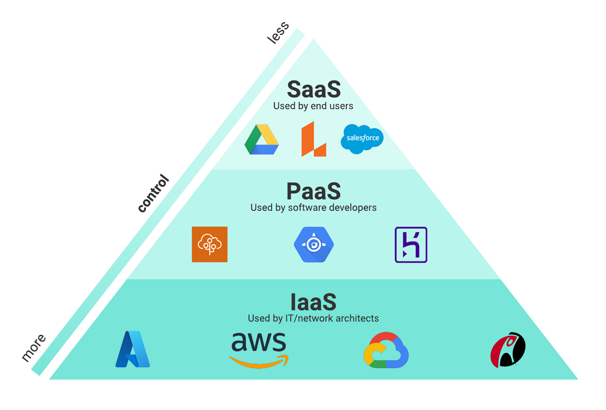

Tipos de implementaciones en la nube
Nube pública
Las nubes públicas ofrecen recursos informáticos (servidores, almacenamiento, aplicaciones, etc.) a través de Internet de un proveedor de servicios en la nube, como AWS y Microsoft Azure. Los proveedores de servicios en la nube poseen y operan todo el hardware, software y otras infraestructuras de soporte.
Nube privada
Una nube privada se compone de recursos informáticos exclusivos de una organización. Físicamente, se puede situar en el centro de datos interno de una organización o lo puede alojar un proveedor de servicios en la nube. Una nube privada ofrece un mayor nivel de seguridad y privacidad que la nube pública ofreciendo recursos especializados a las empresas. Los clientes de la nube privada obtienen los principales beneficios de una nube pública, como el autoservicio, la escalabilidad y la elasticidad, pero con la ventaja de control y personalización adicionales. Además, las nubes privadas pueden contar con un nivel superior de seguridad y privacidad porque se alojan en redes privadas no accesibles al tráfico público.
Nube híbrida
Las nubes híbridas son una combinación de nubes privadas y públicas (por ejemplo, IBM Hybrid Cloud, con la tecnología de Red Hat) conectadas junto con tecnología que permite el funcionamiento conjunto entre datos y aplicaciones. Los servicios y aplicaciones confidenciales se pueden mantener seguros en la nube privada, mientras que los servidores web de acceso público y los endpoints orientados al cliente pueden residir en la nube pública. La mayoría de los populares proveedores de servicios en la nube externos ofrecen un modelo de nube híbrida, lo que permite a los usuarios combinar la nube privada y la pública para satisfacer sus necesidades. De esta forma, las empresas disfrutan de una mayor flexibilidad para implementar los requisitos específicos de infraestructura de su aplicación.
Explora la Computación en la Nube
Servicios Cloud
Los servicios de computación en la nube son recursos tecnológicos como servidores, almacenamiento, bases de datos, redes, software y herramientas analíticas que se ofrecen a través de Internet bajo demanda y con un modelo de pago por uso. En lugar de invertir en infraestructura física, las compañías consumen estos recursos de forma flexible, escalable y gestionada. Este enfoque permite a las empresas:
- Reducir gastos en hardware y mantenimiento
- Reducir gastos en hardware y mantenimiento
- Acelerar el despliegue de aplicaciones
- Mejorar la disponibilidad y resiliencia
- Acceder a tecnologías avanzadas sin grandes inversiones
- Adaptarse rápidamente a la demanda operativa
Caracteristicas
Antes de la llegada de la computación en la nube, las organizaciones compraban y mantenían una infraestructura local de TI. Aunque el ahorro de costes impulsó gran parte del cambio inicial a la nube, muchas organizaciones opinan que las infraestructuras de nube pública, privada o híbrida ofrecen numerosas ventajas.
| Titulo | Explicacion |
|---|---|
| Autoservicio bajo demanda | Los proveedores de computación en la nube ofrecen API a las que los usuarios acceden para requisar nuevos recursos o recursos existentes de escalado cuando sea necesario. |
| Amplio acceso a la red | La ubicación física del hardware es una preocupación importante a la hora de ofrecer la experiencia óptima del usuario final. La computación en la nube supone una gran ventaja al ofrecer hardware físico distribuido a nivel global, lo que permite las organizaciones aprovisionar de forma estratégica hardware orientado a la ubicación. |
| Agrupación de recursos | En una plataforma de infraestructura de nube, los recursos informáticos se dividen de forma dinámica y se asignan según la demanda. |
| Rápida elasticidad | Las infraestructuras de nube pueden crecer y reducirse de forma dinámica, lo que permite a los usuarios solicitar que sus recursos informáticos escalen automáticamente con las demandas de tráfico. |
| Medición del servicio | Los proveedores de infraestructuras de nube proporcionan métricas de uso detalladas que se utilizan para informar sobre los costes de uso. |
Ventajas
Las propiedades exclusivas de las infraestructuras de nube proporcionan varias novedosas ventajas técnicas y empresariales. Estas son las ventajas clave de la computación en la nube para los equipos ágiles.
Reducción de costesLos equipos que utilizan recursos en la nube no tienen que comprar sus propios activos de hardware. Más allá de los costes de hardware, los proveedores de servicios en la nube hacen todo lo posible para maximizar y optimizar el uso del hardware. |
Mayor escalabilidadDado que la computación en la nube es elástica de forma predeterminada, las organizaciones pueden escalar los recursos bajo demanda. La computación en la nube ofrece funciones de escalado automático a los equipos. |
Mayor velocidad de ejecuciónLos equipos que utilizan infraestructuras de nube pueden ejecutar y ofrecer valor más rápido a sus clientes. Los equipos de software ágil pueden emplear una infraestructura de nube para probar rápidamente las nuevas máquinas virtuales a fin de experimentar y validar ideas únicas, así como automatizar las pruebas y las fases de implementación de la canalización. |
Seguridad reforzadaEl alojamiento de la nube privada ofrece una infraestructura aislada con cortafuegos que refuerza la seguridad. Además, los proveedores de servicios en la nube ofrecen muchos mecanismos y tecnologías de seguridad para ayudar a crear aplicaciones seguras. |
Rendimiento mejoradoLa computación en la nube ofrece los mejores y más recientes recursos informáticos. Los usuarios pueden acceder a las máquinas más recientes con CPU multinúcleo extremas diseñadas para arduas tareas de procesamiento paralelo. Además, los principales proveedores de servicios en la nube ofrecen vanguardistas máquinas de hardware de GPU y TPU para unas intensas tareas de procesamiento de gráficos, matrices e inteligencia artificial. |
Ejemplos de Uso

- Infraestructura como servicio (IaaS) y plataforma como servicio (PaaS): La infraestructura como servicio (IaaS) ofrece recursos informáticos, de red y de almacenamiento fundamentales a los consumidores bajo demanda, a través de Internet y en régimen de pago por uso. El uso de la infraestructura en la nube en un esquema de pago por uso permite a las empresas ahorrar en los costos de adquisición, gestión y mantenimiento de su propia infraestructura de TI. Además, se puede acceder fácilmente a la nube. La mayoría de los principales proveedores de servicios en la nube, entre ellos Amazon Web Services (AWS), Google Cloud, IBM Cloud y Microsoft Azure, ofrecen IaaS con sus servicios de computación en la nube. La plataforma como servicio (PaaS) proporciona una plataforma completa en la nube (por ejemplo, hardware, software e infraestructura) para desarrollar, ejecutar y gestionar aplicaciones sin el costo, la complejidad y la falta de flexibilidad que a menudo conllevan la creación y el mantenimiento de esa plataforma en un entorno local. Las organizaciones pueden recurrir a la PaaS por las mismas razones por las que buscan la IaaS. Quieren aumentar la velocidad de desarrollo en una plataforma lista para usar e implementar aplicaciones con un modelo de precios previsible y rentable.
- Software como servicio (SaaS): Si bien el software como servicio (SaaS) es similar a los usos de la IaaS y la PaaS descritos anteriormente, en realidad merece su propia mención por el innegable cambio que este modelo provocó en la forma en que las empresas emplean el software. El SaaS ofrece acceso al software en línea a través de una suscripción, en lugar de que los equipos de TI tengan que comprarlo e instalarlo en sistemas individuales. Los proveedores de SaaS, como Salesforce, permiten el acceso al software en cualquier lugar y en cualquier momento, siempre que haya una conexión a Internet. Estas herramientas abrieron el acceso a herramientas y capacidades más avanzadas, como automatización, flujos de trabajo optimizados y colaboración en tiempo real en varias ubicaciones
- Nube híbrida y multinube: La nube híbrida es un entorno informático que conecta los servicios de nube privada local de una empresa y los servicios de nube pública de terceros en una infraestructura única y flexible para ejecutar aplicaciones y cargas de trabajo críticas. Esta combinación única de recursos de nube pública y privada facilita la selección de la nube óptima para cada aplicación o carga de trabajo. Además, luego permite mover las cargas de trabajo libremente entre las dos nubes según cambien las circunstancias. Con una infraestructura de nube híbrida, los objetivos técnicos y empresariales se cumplen de forma más eficaz y rentable de lo que podría lograrse solo con la nube pública o privada.
- Pruebas y desarrollo: Uno de los mejores casos de uso de la nube es un entorno de desarrollo de software. Los equipos de DevOps pueden poner en marcha rápidamente entornos de desarrollo, prueba y producción adaptados a necesidades específicas. Esto puede incluir, entre otros, el aprovisionamiento automatizado de máquinas físicas y virtuales. Para realizar pruebas y desarrollo internamente, las organizaciones deben asegurar un presupuesto y configurar el entorno de pruebas con activos físicos. Luego viene la instalación y configuración de la plataforma de desarrollo. Todo esto a menudo puede extender el tiempo que requiere completar un proyecto y extender las metas de cada etapa. La computación en la nube acelera este proceso con herramientas de desarrollo basadas en la nube que hacen que la creación de aplicaciones y software sea más rápida, fácil y rentable.
- Analytics de big data: Utilizando el poder informático de la computación en la nube, las empresas pueden obtener información estratégica poderosa y optimizar los procesos de negocio a través de análisis de big data. Cada día se recopila una enorme cantidad de datos procedentes de los endpoint de las empresas, las aplicaciones en la nube y los usuarios que interactúan con ellos. La computación en la nube permite a las organizaciones aprovechar grandes cantidades de datos estructurados y no estructurados disponibles para aprovechar el beneficio de extraer valor comercial.